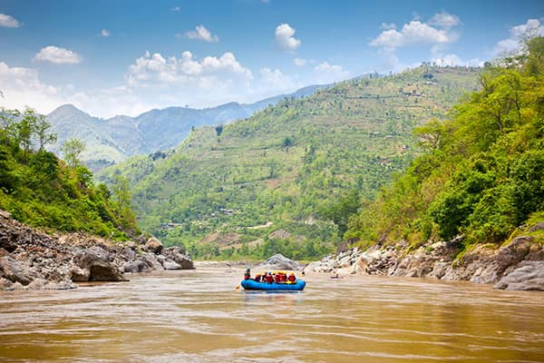
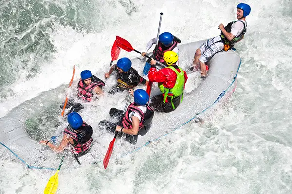

Calm Waters
For those looking to soak in the beauty of nature at a relaxed pace, the "Calm Waters" trip is the perfect choice. Glide through a serene river surrounded by lush green hills and breathtaking landscapes. This trip is ideal for families, beginners, and those who want to unwind while gently floating downstream. Along the way, enjoy the sights and sounds of wildlife and the peaceful embrace of nature


Big Mallard
Get ready for a heart-pounding experience on the "Big Mallard" rapids! With its unpredictable waves and thrilling twists, this trip offers an unforgettable rush for adventure seekers. As you paddle through the foamy whitewater, teamwork and determination will be key to conquering the challenge. Expect a mix of excitement and splash-filled fun as you power through one of the most thrilling runs on the river.
Whitewater Rafting Trip Details
| Trip Name | Duration | Price(per person) | Age Requirement | Highlights |
|---|---|---|---|---|
| Beginner Rapids | Half-Day | R50 | 8+ | Calm waters, scenic views |
| Adventure Run | Full-Day | R120 | 12+ | Small rapids, wildlife spotting |
| Extreme Rush | 2 Days | R250 | 16+ | Big rapids, camping included |
| Family Float | 2 Hours | R40 | 6+ | Gentle ride, perfect for families |
| Ultimate Thrill | 3 Days | R400 | 18+ | Intense rapids, overnight stays |